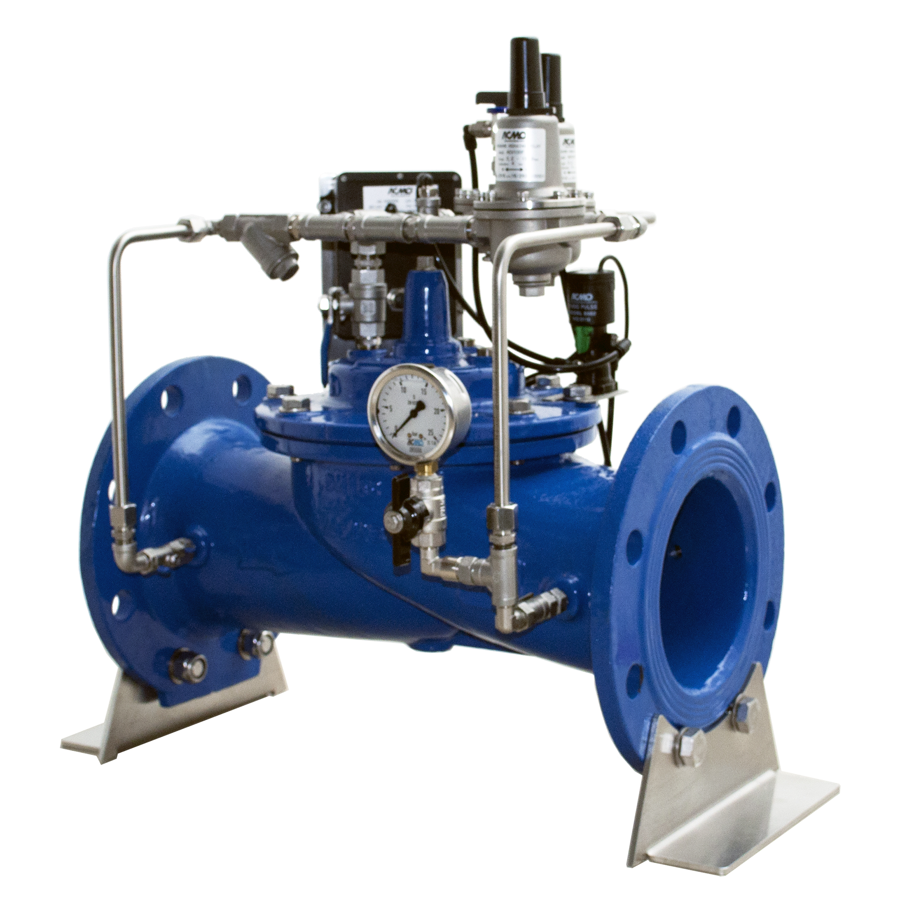

Methods of valve actuation fall into one of the following categories:
1.Linear
2.Part-turn
3.Multi-turn
Each of the above methods can be powered by one of the following sources:
1.Hydraulic
2.Electric
3.Pneumatic
Rotary actuators vary in terms of actuator torque and range of motion. Depending on the valve’s design, the stem may rise during rotation or without rotation. Common ranges of motion include 90-degree (part-turn), 180-, 270-, and 360-degree (multi-turn). As such, rotary actuators may be used for valves such as ball, plug and butterfly.
Linear valve actuators differ in terms of valve stem stroke length, number of turns, and actuator force or seating thrust. The term stroke is used to define the travel required to have the valve fully opened to fully closed. Using an actuator with fewer strokes than the valve will "short stroke" the valve and the full control volume rating of the valve will not be realised.
Linear actuators are used to actuate valves such as gate, globe and diaphragm valves.
Hydraulic actuators are capable of delivering very high torques, and with it the fast-stroking speed necessary to operate larger valves. They offer stiffness in the stroke, because they are using what is considered to be a non-compressible liquid. Hydraulic actuators are used for these characteristics when, for certain reasons, pneumatic or electric motors are either not suitable or not available.
Hydraulic actuators are available as double acting or spring return, similar to pneumatic actuators and the pressure is supplied by means of a hydraulic pump. This power source can be supplied either locally by a power pack, or remotely with the hydraulic fluid transferred through smallbore tubing. The pressure of the hydraulic fluid can be varied to supply different torque outputs. This allows for more flexibility of energy sources and subsequent outputs than is available with both electric and pneumatic actuators.
The principles of operation of a hydraulic actuator are like those of the pneumatic actuator. Each uses some motive force to overcome spring force to move the valve. This allows hydraulic actuators to be designed to fail-open or fail-close depending on their use case.
The actuator must deliver enough torque to move and seat the valvewith the minimum power supply available and also maintain the required position (open, closed, or intermediate) under the worst flowconditions that the valve might experience.
The actuator must be capable of completing the travel, that is, 90°,180°, and multi-turn at the required speed.
The actuator must include a device that prevents excessive forcesbeing applied to the valve under adverse power supply conditions.
The actuators fail-safe position must be considered and appropriate systems put in place to facilitate this.